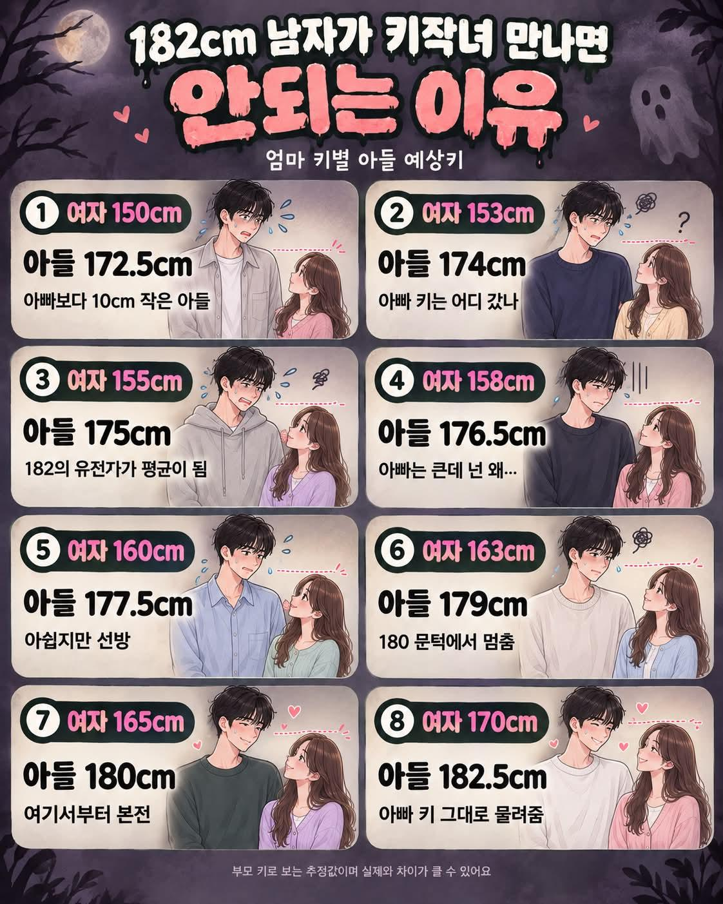

이런거 만들어서 올리는중 ㅋㅋ
2세 생각하면 키큰녀가 맞긴한데..

이런거 만들어서 올리는중 ㅋㅋ
2세 생각하면 키큰녀가 맞긴한데..
ㅇㄱㄹㅇ
와이프 키 169.5... 나를 만나준거에 감사 ㅎ
뭐야 이 공감 1도안되는 병신같은 짤은
잘 모르겠음...울아빠 172 엄마 151 인데 난 187임...누나도 169고 그냥 어렸을때부터 잘먹고 잘자는게 제일 좋은거같음. 특히 아버지가 어려울때도 우리한테 고기 반찬을 계속 먹을 수 있게 투잡 뛰어가며 먹여주심
키는 유전자가 80퍼 이상임
아마 친조부모나 외조부모쪽에 키크신분이 있을꺼임
이모나 외가쪽 키 보면 클듯.
나두 비슷한 상황임
못먹어서 키안큰거는 할아버지세대 아닌가 이정도 차이가 어케나지
결혼 염두에 두고 여친 만나는 사람들은 키 존나 봄 150대는 아예 고려도 안함 164-5부터 사람 취급함 남자인 만큼 키에 대한 중요성을 더 잘 알고있기 때문임
판가면 난쟁이 똥자루들이 정신승리함... 키크면 얼굴 골격 커지고 뭐 어쩌고 저쩌고 하면서...
기억해라 키작은 여자는 나이먹으면 그냥 키작은 아줌마라는걸
키 150대 따리 난쟁이년이 자기는 작으니까 남자는 커야한다 이지랄하면
그건 뚝배기를 깨버려야지 양심없는년 같으니
난 개인적으로 키 너무 작은 여자들보면 불쾌한 골짜기 느껴짐
ㄹㅇ
여자 키는 얼마가 좋니 나올때마다 이질감 느껴짐
작은여자가 좋다고 하는데
적당히 작아야 좋지
똥자루만한 키를 좋다고 하는거 보면
뭐지 싶음
이게 중간값이 나오는게 아니라 형제인데도 한명은 160이고 한명은 180이고 그러더라
친가, 외가 다작음..아빠 168, 엄마 158이었음 ..ㅋㅋ
본인 187임..학창시절 하루종일 먹고,자고,운동,먹고,자고.. 끝..
이상한게 군대 가서도 키가 커서 전역하니 187..
진짜 잘먹고 자고, 운동만 한게 최고인듯..
이야
그냥 잘 먹고, 잘 자고, 잘 운동하고, 공부 잘 안하고 끝..
보지는 큰데 속은 존나 좁네
엄마 160 나 185
난 160 넘어가면 여자로 안 본다
응??
160넘어가면 안보는게 머임??
애초에 키큰녀가 별로 없음
키는 여자 유전자가 강하다. 2세 생각하면 키 큰 여자 만나라. 키큰 얘들 보면 대부분 엄마가 큰거 같더라.
ㅋㅋㅋㅋㅋ 보적보
정작 키큰여자들은 저런거 ㅂㅅ같다고 생각할듯
틀딱이 ai돌린것같은데
여자는 165~168이 이상적이긴함. 160이하 170이상은 너무 작거나 큼
여자 키는 168이 최고다
키는 다인자유전임 모계유전이라 하는 놈들은 생물시간에 졸았거나.. 그냥 엄마를 원망하고 싶은것
170은 되야 편함
작은애들 만나면 손 잡고 다니기 불편함
허리 감싸고 가려고 해도 존나 허리 구부려야해수 불편
유전자가 저리될거라는 망상은 ㅅㅂ ㅋㅋㅋㅋㅋ
남평 173이면 여평 161 만나는게 당연
여자키는 아무의미가없는데 비율이 중요하지
유전자는 그런식으로 동작하지 않아요...
야 정답알려줄게
니네 외삼촌 외할아버지 키를 보면 됨ㅋㅋㅋㅋㅋㅋㅋ